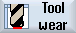

All parameters and functions that are required during operation are contained in the tool wear list.
Tools that are in use for long periods are subject to wear. You can measure this wear and enter it in the tool wear list. The controller then takes this information into account when calculating the tool length or radius compensation. This ensures a consistent level of accuracy during workpiece machining.
Monitoring types
You can automatically monitor the tools' working times via the workpiece count, tool life or wear.
|
Note
|
Combination of monitoring types
You have the option to activate the monitoring of a tool by type or any combination of monitoring types.
|
In addition, you can disable tools when you no longer wish to use them.
 | Machine manufacturer Please refer to the machine manufacturer's specifications. |
Tool parameters
Column heading | Meaning |
|---|
Location
BS
 * If activated in magazine selection | Magazine/location number The magazine location numbers
The magazine number is specified first, followed by the location number in the magazine.
If there is only one magazine, only the location number is displayed. Load position in the load magazine
The following icons can also be displayed for other magazine types (e.g. for a chain): |
Type | Tool type Depending on the tool type (represented by an icon), certain tool offset data is enabled. |
Tool name | The tool is identified by the name and the replacement tool number. You can enter the name as text or number. Note: The maximum length of tool names is 31 ASCII characters. The number of characters is reduced for Asian characters or Unicode characters. The following special characters are not permitted: | # ". |
ST | Replacement tool number (for replacement tool strategy). |
D | Cutting edge number |
Δ Length | Length wear |
Δ Radius | Radius wear |
T C | Selection of tool monitoring
- by tool life (T) - by count (C) - by wear (W) The wear monitoring is configured via a machine data item. Please refer to the machine manufacturer's instructions. |
Tool life Workpiece count Wear * *Parameter depends on selection in TC | Tool life Number of workpieces Tool wear |
Setpoint | Setpoint for tool life, workpiece count, or wear |
Prewarning limit | Specification of the tool life, workpiece count or wear at which a warning is displayed. |
G | The tool is disabled when the checkbox is selected. |
Further parameters
If you have created unique cutting edge numbers, they will be displayed in the first column.
Column heading | Meaning |
|---|
D no. | Unique cutting edge number |
SN | Cutting edge number |
SC  | Setting-up offsets Display of the available setup offsets |
Icons in the wear list
Icon/ Marking | | Meaning |
|---|
Tool type |
Red "X" |  | The tool is disabled. |
Yellow triangle pointing downward |  | The prewarning limit has been reached. |
Yellow triangle pointing upward |  | The tool is in a special state. Place the cursor on the marked tool. A tooltip provides a short description. |
Green border
|  | The tool is preselected. |
Magazine/location number |
Green double arrow |  | The magazine location is positioned at the change position. |
Gray double arrow (configurable) |  | The magazine location is positioned at the loading position. |
Red "X" | | The magazine location is disabled. |
Procedure
 | 1. | Select the "Parameter" operating area. |
|  | 2. | Press the "Tool wear" softkey. |